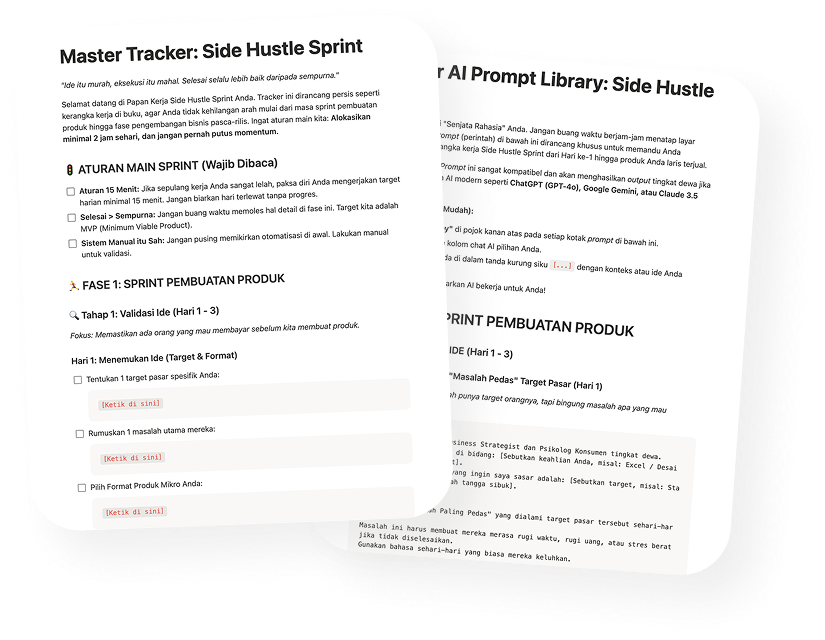

KHUSUS PRO BUNDLE
Jangan mulai dari nol. Sistemnya sudah disiapkan.
Pro Bundle hadir dengan dua template siap pakai yang mengikuti setiap langkah di buku, hari per hari. Buka, duplikat, dan langsung mulai.
Template 1
Notion Master Tracker
Papan kerja harian dari Hari 1 sampai Hari 15. Tidak perlu membangun tracker dari nol. Buka, duplikat ke akun Notion kamu, dan langsung tahu apa yang harus dikerjakan hari ini.
Template 2
AI Prompt Library
12 prompt siap pakai untuk setiap fase Sprint. Tidak perlu menatap layar kosong. Copy prompt-nya, tempel ke AI, dan hasilkan konten produkmu dalam hitungan menit.

Selisihnya hanya Rp 45.000 dari Paket Basic. Tapi menghemat berjam-jam waktu yang tidak bisa kamu beli kembali.
Lihat Paket Pro Bundle →